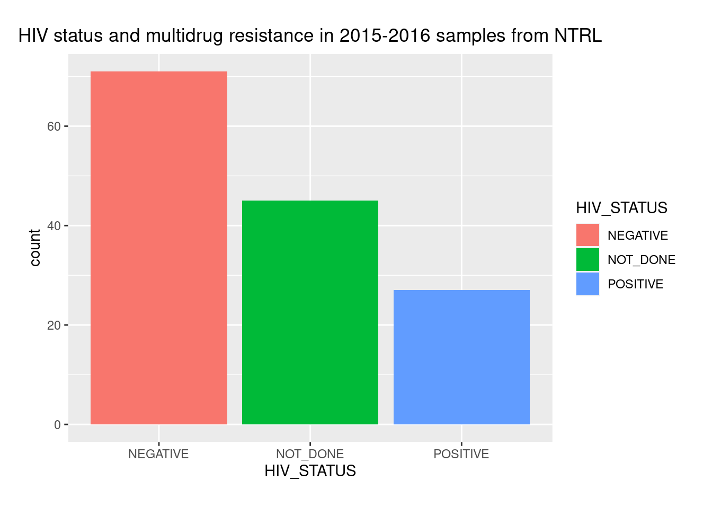
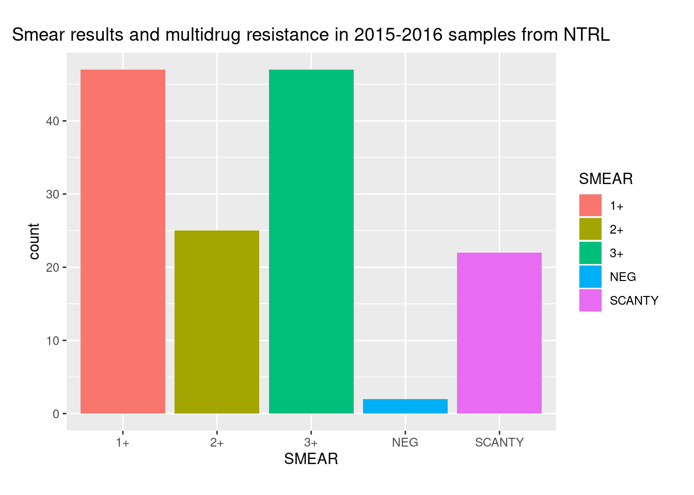
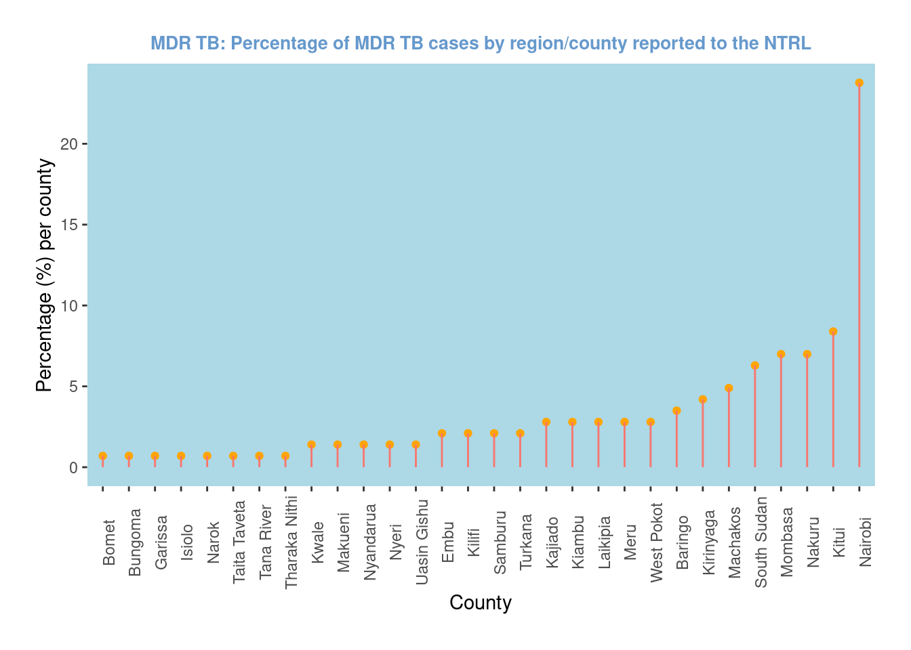

hivbar <-ggplot(mdr_tb_dfv1, mapping =aes(x=HIV_STATUS)) +geom_bar(mapping =aes(fill = HIV_STATUS)) +ggtitle('HIV status and multidrug resistance in 2015-2016 samples from NTRL')hivbar

TB TYPE BAR PLOT
tb_type_bar <-ggplot(mdr_tb_dfv1, mapping =aes(x=TB_TYPE)) +geom_bar(mapping =aes(fill = TB_TYPE)) +ggtitle('TB Type and multidrug resistance in 2015-2016 samples from NTRL')
SMEAR BAR PLOT
smearBar <-ggplot(mdr_tb_dfv1, mapping =aes(x=SMEAR)) +geom_bar(mapping =aes(fill = SMEAR)) +ggtitle('Smear results and multidrug resistance in 2015-2016 samples from NTRL')smearBar

Age groups based on WHO typical age divisions
mdr_tb_dfv3 <- mdr_tb_dfv1 %>%mutate(# Create categoriesage_group = dplyr::case_when( AGE <=4~"0-4", AGE >4& AGE <=14~"5-14", AGE >14& AGE<=24~"15-24", AGE >24& AGE <=34~"25-34", AGE >34& AGE <=44~"35-44", AGE >44& AGE <=54~"45-54", AGE >54& AGE <=64~"65+", AGE >=64~"35-44" ),# Convert to factorage_group =factor( age_group,level =c("0-4", "5-14","15-24","25-34","35-44","45-54", "65+") ))
LOLLIPOP PLOT FOR COUNTY/GEOGRAPHICAL DISTRIBUTION
geoGrpsPcts <-pcts(mdr_tb_dfv1, 'Province')GeoPops <- geoGrpsPcts %>%arrange(desc(Percentages)) %>%mutate( Province = forcats::fct_reorder(Province, Percentages)) %>%ggplot(aes(x=Province, y=Percentages)) +geom_point(color ='orange') +geom_segment(aes(x=Province, y=Percentages, xend=Province, yend=0, color ='red')) +theme(axis.text.x =element_text(angle =90), panel.background =element_rect(fill ='lightblue'), panel.grid.major =element_blank(), panel.grid.minor =element_blank(), plot.title =element_text(color='#6699CC', size =10, face ='bold')) +labs(title ='MDR TB: Percentage of MDR TB cases by region/county reported to the NTRL', y='Percentage (%) per county', x='County') +guides(color ='none')GeoPops

AGE GROUP BAR PLOT
age_groupBars <- mdr_tb_dfv3 %>%group_by(age_group) %>%summarise(counts =n())ggplot() +geom_bar(data = age_groupBars, aes(x = age_group, y = counts, fill = age_group), stat ="identity") +labs(title ='Age distribution of MDR isolates subitted to the NTRL between 2015-2015')
Fisher's Exact Test for Count Data
data: contingency_table
p-value = 0.3319
alternative hypothesis: true odds ratio is not equal to 1
95 percent confidence interval:
0.5015292 9.1443367
sample estimates:
odds ratio
2.088592